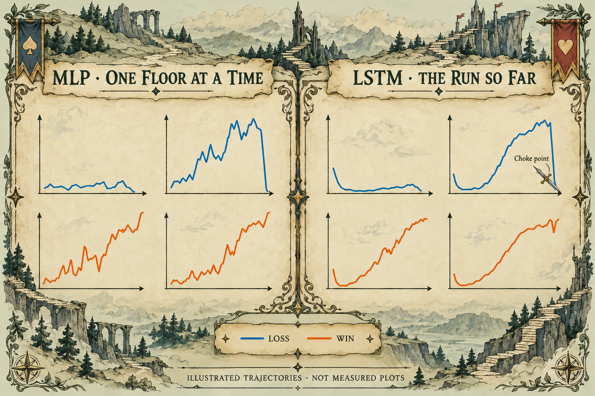

Estimating a run’s chance of winning from its evolving deck and history.
I love Slay the Spire, so I used my DS340 applied machine learning and neural networks project to ask a question I cared about: can a model estimate a run's chance of winning as its deck changes? I led the implementation from reconstructing the data through modeling and evaluation. I coauthored the accompanying paper with Fernando Martín.
The raw logs record events, not a ready-to-model deck on every floor. I built the reconstruction pipeline to replay card additions, removals, upgrades, and relic acquisitions in order. Roughly 126,000 human runs became about three million floor states, each paired with its run's final outcome.
I represented each deck as a 1,380-dimensional card-count vector, then used truncated SVD to compress it to 128 dimensions. This gave the models a compact representation of the changing deck alongside game-state features such as health and ascension level. The repository includes notebooks for reconstruction, card handling, exploration, and modeling; the large datasets and pretrained models are shared separately for use in Colab.
Logistic regression and the MLP predict from one floor at a time. The LSTM processes the sequence up to that point, carrying information about how the run developed. I built a configurable PyTorch modeling and training framework so I could compare architectures without rewriting the training loop for each experiment.
At floor 35, the plain two-layer LSTM achieved a held-out ROC AUC of 0.873, compared with 0.789 for the per-floor MLP. Adding attention reduced AUC to 0.759. I expected attention to help because context matters in this game; in these experiments, the simpler recurrent model worked better.
The paper's sample trajectories show smoother predictions from the LSTM than from the MLP. That made the curves easier to inspect, but smoothness alone was not the result: I compared models at fixed floor horizons, using only the history available through each evaluation floor.
| Model | ROC AUC | Win recall | F1 |
|---|---|---|---|
| Logistic regression | 0.740 | 0.519 | 0.548 |
| MLP | 0.789 | 0.630 | 0.592 |
| Two-layer LSTM | 0.873 | 0.826 | 0.634 |
| LSTM with attention | 0.759 | 0.557 | 0.574 |
The ranking also changed with the horizon. At floor 50, the MLP had the higher F1 score (0.900 versus 0.860), while the plain LSTM had higher ROC AUC (0.980 versus 0.958). A sequence model was useful, but it was not the best choice on every metric at every stage.

I split by run identifier so floors from the same run stayed together. The floor-35 and floor-50 results use held-out runs that reached those floors. That population matters: these scores describe surviving runs at a given horizon, rather than every run that started the game.
SVD was fitted on all of the data before the split. A stricter follow-up would fit the representation on training runs alone and transform held-out runs afterward. I would use that evaluation before making stronger claims about generalization.
A falling prediction can flag a point worth reviewing. It does not prove that the preceding choice caused the loss: these are predictions from observed human play, not experiments comparing alternative decisions. The project gave me a way to inspect a run's development and a concrete lesson in testing architectural intuition against results.